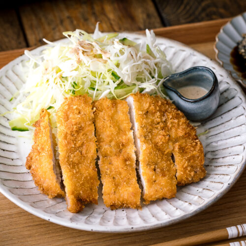

Japanese Fried Pork

Description
Tonkatsu, or pork cutlet, is a Japanese dish of pork filet that is breaded with panko breadcrumbs and deep-fried. It is traditionally served with a dark, savory tonkatsu sauce and shredded green cabbage.
Ingredients
- 4 boneless pork chops
- Kosher salt, to taste
- Freshly ground black pepper, to taste
- 1 cup all-purpose flour
- 1 large egg, beaten
- 1/2 to 1 cup panko breadcrumbs
- 1 cup canola oil, for frying
- 1/4 head green cabbage, shredded, for garnish
- Tonkatsu sauce (bottled), for garnish
- Karashi (hot Japanese mustard), optional
Directions
- Gather the ingredients.
- Cut the edge of the pork chops in several places. Season with salt and pepper.
- Set up a breading station with 3 shallow dishes. Place flour in the first dish, lightly beaten egg in the second dish, and panko breadcrumbs in the third dish.
- Coat each pork chop generously with flour, shaking any excess off.
- Coat pork with panko breadcrumbs and set aside on a platter.
- In a deep pan, heat the canola oil to around 340 F as measured on a frying thermometer.
- Deep-fry breaded pork for 5 to 6 minutes.
- Turn pork over and fry about 5 more minutes or until cooked through and browned.
- Remove pork from oil and drain on paper towels.
- While pork is resting, finely shred green cabbage and soak in ice-cold water.
- Drain shredded cabbage well.
- Cut each tonkatsu lengthwise into small pieces and serve on plates with a side of the shredded cabbage. Drizzle some of the tonkatsu sauce over tonkatsu before eating. Serve karashi (hot Japanese mustard) on the side if you prefer.
- Enjoy!
Main Page